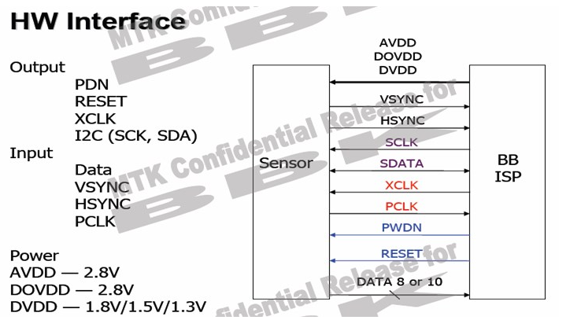

#图像有哪些格式？
- jpeg
- bmp
- png
注：手机生成的图像格式大多为JPEG
YUV：luma(Y)+chroma(UV)格式（亮度、色度），一般情况下sensor支持YUV422格式，即Y-U-Y-V次序输出数据。
>>RGB：传统的红绿蓝格式，比如RGB565,5bit R + 6bit G + 5bit B，G多一位是因为人眼对绿色比较敏感。
>>RAW RGB：sensor的每一像素对应一个彩色滤光片，滤光片按Bayer Pattern(拜耳模板)分布，将每一个像素的数据直接输出，即Raw RGB Data。
>>JPEG：有些sensor，特别是低分辨率的，其自带JPEG engine，可以直接输出压缩后的jpg格式的数据。
注意：
a>YUV一个像素占2B，如果像素太大，在高时钟下基带芯片处理不过来，JPEG数据量就要小很多，因为基带芯片对输出数据的速率有要求，所以基带芯片低时钟下使用YUV sensor，高时钟下使用JPEG sensor。
b>如果直接输出RGB，对于LCD显示是最方便的，但是大多数基带芯片都是要求输出为YUV格式的数据再进行，这是因为，YUV输出数据的亮度信号没有任何损失，而色偏信号人眼并不是特别敏感，RGB565输出格式是R5G3 G3B5，会丢失很多原始信息，所以YUV图像质量和稳定性要比RGB565好的多。因此，很低端的基带芯片上才会输出RGB565格式。
Raw和JPEG的区别：
Raw优点：
1>Raw格式文件本质上是一个没有经过任何图像处理的源文件，它能原原本本地记录相机拍摄的信息，没有经过图像处理（锐化、色彩对比增强）和压缩而造成的信息丢失。相比之下，JPEG格式的数据经过压缩处理，无法完整的保存原图形的所有数据。
2>Raw是一种专业摄影师常用的格式，因为它能原原本本地保存信息，让用户能大幅度进行后期制作，并且无论怎么操作，照片都能无损的恢复到最初状态；但是JPEG就弱了些，虽然因为PS等技术的发展，也可以在JPEG上进行后期制作，但是如果做大幅度的调整还是Raw文件比较合适。
3>可以用专门的软件修正摄像机的不足，比如佳能DPP软件可以修正镜头失光、变形等。
Raw缺点：
1>存储数据量太大，JPEG就小很多
2>需要专门的软件来打开，JPEG几乎所有的PC都可以直接打开
3>打开速度较慢，JPEG较快
4>不同的软件有不同的方式去演绎RAW文件，所以在不同的软件上会有细微的差别。
5>厂商卖的专用软件价格较高，而这方面JPEG几乎无成本##图像采集的过程
图像采集的过程为：光照在成像物体被反射 -> 镜头汇聚 -> Sensor光电转换-> ADC转换为raw。
sensor 感光原理
- 模组
摄像头模组，Camera Compact Module，简写为CCM，就是已经包含了镜头，ISP，PCB接口的直接能用的，不需要再考虑sensor选型，设计sensor供电电路，时钟电路的。
摄像头模组硬件结构图：
光线通过镜头Lens进入摄像头内部，然后经过IR Filter过滤红外光，最后到达sensor（传感器），senor分为按照材质可以分为CMOS和CCD两种，可以将光学信号转换为电信号，再通过内部的ADC电路转换为数字信号，然后传输给DSP（如果有的话，如果没有则以DVP的方式传送数据到基带芯片baseband，此时的数据格式Raw Data，后面有讲进行加工）加工处理，转换成RGB、YUV等格式输出。
- 镜头 Lens：
镜头对成像有很重要的作用，相当于人眼中的晶状体，利用透镜的折射原理，景物光线透过镜头在聚焦平面上形成清晰的像，然后通过感光材料CMOS或CCD记录影像，并通过电路转换为电信号。镜头产业有比较高的技术门槛，国外主要集中在日本、韩国，国内主要是在台湾，业内比较知名的如：富士精机、柯尼卡美能达、大力光、Enplas等。
Lens一般由几片透镜组成透镜结构，按材质可分为塑胶透镜(plastic)或玻璃透镜(glass)，玻璃镜片比树脂镜片贵。塑胶透镜其实是树脂镜片，透光率和感光性等光学指标比不上镀膜镜片。通常摄像头采用的镜头结构有：1P、2P、1G1P、1G2P、2G2P、2G3P、4G、5G等。透镜越多，成本越高，相对成像效果会更出色（个人理解是光线更均匀、更细致；对光线的选通更丰富；成像畸变更小，但是会导致镜头变长，光通量变小）。
红外滤光片 IR Filter
主要是过滤掉进入镜头的光线中的红外光，这是因为人眼看不到红外光，但是sensor却能感受到红外光，所以需要将光线中的红外光滤掉，以便图像更接近人眼看到的效果。传感器 Sensor
目前常用的sensor有两种，一种是CCD（电荷耦合）原件；一种是CMOS（金属氧化物导体）原件。
CCD（Charge Coupled Device），电荷耦合器件传感器：使用一种高感光度的半导体材料制成，能把光线转变成电荷，通过模数转换器芯片转换成电信号。CCD由许多独立的感光单位组成，通常以百万像素为单位。当CCD表面受到光照时，每个感光单位都会将电荷反映在组件上，所有的感光单位产生的信号加在一起，就构成了一幅完整的图像。CCD传感器以日本厂商为主导，全球市场上有90%被日本厂商垄断，索尼、松下、夏普是龙头。
CMOS（Complementary Metal-Oxide Semiconductor），互补性氧化金属半导体：主要是利用硅和锗做成的半导体，使其在CMOS上共存着带N(-)和P(+)级的半导体，这两个互补效应所产生的电流可以被处理芯片记录并解读成影像。CMOS传感器主要以美国、韩国和中国台湾为主导，主要生产厂家是美国的OmnVison、Agilent、Micron，中国台湾的锐像、原相、泰视等，韩国的三星、现代。
- 图像处理芯片 DSP
DSP是CCM的重要组成部分，它的作用是将感光芯片获得的数据及时地快速地传递到中央处理器并刷新感光芯片，因此DSP芯片的好坏，直接影响画面品质，如：色彩饱和度、清晰度、流畅度等。如果sensor没有集成DSP，则通过DVP的方式传输到baseband芯片中（可以理解为外挂DSP），进入DSP的数据是RAW Data，采集到的原始数据。如果集成了DSP，则RAW Data会经过AWB、color matrix、lens shading、gamma、sharpness、AE和de-noise处理，最终输出YUV或者RGB格式的数据。如下图中所示，ISP（Image Sensor Processor，不是Image Signal Processor）部分中使用的就是DSP来处理Image sensor的输出数据（Raw Data）：
DVP
DVP分为三个部分：输出总线；输入总线；电源总线；如下图：
输入总线介绍
a>PWDN是camera的使能管脚，有两种配置方式，一种为standby，一种是normal work，设置为standby的时候，一切对camera的操作都是无效的，包括复位。所以在RESET之前，一定要将PWDN管脚设置为normal模式，否则RESET无效。
b>RESET是camera的复位管脚，此方式为硬复位模式，camera的各个IO口恢复到出厂默认状态。只有在XCLK开启后，将RESET置为低，硬复位才有效，否则复位无效。
c>XCLK是camera的工作时钟管脚，此管脚为BB提供camera的工作时钟。
d>IIC是camera和BB通信的总线通道。
输出总线介绍
a>data为camera的数据管脚。此数据脚可以输出的格式有YUV、RGB、JPEG等。
b>VSYNC为camera的帧同步信号管脚。一个VYSNC信号结束表示一帧（即一个画面）的数据已经输出完毕。
c>HSYNC为camera行同步信号管脚。一个HSYNC信号结束表示一行的数据已经输出完毕。
d>PCLK为像素同步信号管脚。一个PCLK信号结束表示一个像素点的数据已经输出完毕。
Power线介绍
a>AVDD为camera的模拟电压。
b>DOVDD为camera的GPIO口数字电压。
c>DVDD为camera的核工作电压。
一般来说，要求先提供sensor的GPIO口电压，接着提供模拟电压，最后提供工作电压。时序如下图：FPC柔性电路板(柔性PCB)
简称”软板”, 又称”柔性线路板”,连接芯片和手机。起到电信号传输作用。一些概念区别
常见基带处理器或者基带芯片负责数据处理与储存，相当于一个协处理器，主要组件为DSP、微控制器、内存（如SRAM、Flash）等单元，主要功能为基带编码/译码、声音编码及语音编码 等。目前主流基带架构：DSP+ARM。可分为五个子块：CPU处理器、信道编码器、DSP、调制解调器和接口模块。
基带芯片是用来合成即将的发射的基带信号，或对接收到的基带信号进行解码。具体地说，就是：发射时，把音频信号编译成用来发射的基带码；接收时，把收到的基带码解译为音频信号。同时，也负责地址信息（手机号、网站地址）、文字信息（短讯文字、网站文字）、图片信息的编译。
ISP，Image Signal Processor，图像信号处理器；DSP，Data Signal Processor，数字信号处理器。
ISP一般用来处理Image Sensor（图像传感器）的输出数据，如进行：AEC（自动曝光控制）、AGC（自动增益控制）、AWB（自动白平衡）、色彩校正、Gamma校正、祛除坏点、Auto Black Level、Auto White Level 等等功能的处理。而DSP功能就比较多了，它可以做些拍照以及回显（JPEG的编解码）、录像以及回放（Video 的编解码）、H.264的编解码、还有很多其他方面的处理，总之是处理数字信号了。可以认为ISP是一类特殊的处理图像信号的DSP。
在摄像头这部分，要看清楚ISP表示的是什么，是Image Signal Processor（图像信号处理器），还是Image Sensor Processor（图像传感器处理器）。像上面的OV2665里面的ISP就是Image Sensor Processor，相当于Sensor模块中的一部分，由DSP做处理器。而下面的GC0308，则正好相反，是Image Signal Processor，是一个真正的处理器，所以在看到ISP的时候要根据语境看指的是一个具体的处理器还是模块的组成部分。
图像解析度/分辨率(resolution)
QSIF/QQVGA 160 x 120 19200 QCIF 176 x 144 25344 SIF/QVGA 320 x 240 76800 CIF 352 x 288 101376 10万像素 VGA 640 x 480 307200 30万像素(35万是指648X488) SVGA 800 x 600 480000 50万像素 XGA 1024 x 768 786438 80万像素 SXGA 1280 x 1024 1310720 130万像素 UXGA 1600 x 1200 1920000 200万像素 QXGA 2048 x 1536 3145728 300万像素(320W) QSXGA 2592 x 1944 5038848 500万像素 2816 x 2112 2947392 600万像素 3072 x 2304 7077888 700万像素 3200 x 2400 7680000 770万像素 3264 x 2448 7990272 800万像素 3876 x 2584 10015584 1000万像素 Sensor的感光原理
Sensor负责通过一个一个的感光点对光进行采样和量化，但，在Sensor中，每一个感光点只能感光RGB中的一种颜色。所以，通常所说的30万像素或130万像素等，指的是有30万或130万个感光点。每一个感光点只能感光一种颜色，一个感光点就是一个像素。
因为sensor上每个像素只采集特定颜色的光的强度，因此sensor每个像素只能为R或G或B，形成的数据就成为了raw数据。raw数据是sensor的经过光电转换后通过ADC采样后直接输出数据，是未经处理过的数据，表示sensor接受到的各种光的强度。
解释：sensor上是由一个个感光的小点（你可以这么理解，就是只有几个微米大小的感光器件组成，多少个感光小点就有多少个像素），但是一个像素上要采集多种最基本的颜色，如rgb三种颜色，最简单的方法就是用滤镜的方法，红色的滤镜透过红色的波长，绿色的滤镜透过绿色的波长，蓝色的滤镜透过蓝色的波长。如果要采集rgb三个基本色，则需要三块滤镜，这样价格昂贵，且不好制造，因为三块滤镜都必须保证每一个像素点都对齐显然是不可能的。
所以就有了bayer这种方式，bayer 格式图片在一块滤镜上设置的不同的颜色，通过分析人眼对颜色的感知发现，人眼对绿色比较敏感，所以一般bayer格式的图片绿色格式的像素是是r和g像素的和。
Bayer是相机内部的原始图片, 一般后缀名为.raw，bayer图一个像素就只有一个颜色, 或R或G或B。要还原一个真正图像，需要每一个点都有RGB三种颜色。RGB图, 即为三色图, 一个像素点就由RGB三种颜色构成的混合色。
在Sensor模组的内部会有一个ISP模块（应该理解为Image Sensor Processor，是Sensor模块的组成部分，），会对Sensor采集到的数据进行插值和特效处理。如果一个像素点感应为R值，那么ISP会根据该感光点周围的G、B的值，通过插值和特效处理等，计算出该R点的G、B值。
摄像头模组里面干了这个几件事
（1）sensor芯片需要的电源和时钟等信号的设计
（2）有些sensor自己就带内部ISP，或者说集成了，所以输出的直接是YUV或者RGB格式
（3）没有ISP的sensor就需要外部挂一个ISP。电路上就是一个sensor的信号连接到ISP上，信号和传输YUV的这种DVP信号很类似，但是传输的信息是完全不一样的。
摄像头上有这几个参数，有效像素，和像素尺寸大小：
对于不同的sensor，在其内部形成的raw数据格式也是有区别的。raw数据排列格式（Bayer pattern）有四种：
| G | R |
|---|---|
| B | G |
| G | B |
|---|---|
| R | G |
| R | G |
|---|---|
| G | B |
| B | G |
|---|---|
| G | R |
假设一个sensor的像素是88（分辨率为88），那么这个sensor就有8*8个感光点，每个感光点就是一个晶体管。那么对于上表中四种排列格式的rawRGB数据如下图所示：
由上图可以看出，每一种格式的rawRGB数据的G分量都是B、R分量的两倍，是因为人眼对于绿色的更加敏感，所以加重了其在感光点的权重，增加了对绿色信息的采样。)
摄像头工作原理
| Signal | I/O | Description | Type |
|---|---|---|---|
| HREF | I | 行同步信号 | |
| PCLK | I | 像素时钟 | |
| DATA[7:0] | I | 像素数据 | |
| FIELD | O | FIELD信号 | |
| MCLK | O | 系统时钟信号 | |
| 每个摄像头都有三个时钟域，第一个是系统总线时钟域；第二个是摄像头像素时钟域PCLK；第三个是内部时钟MCLK。 |
系统总线时钟必须高于PCLK，CAM_MCLK必须固定频率发呢拼比，如：PLL时钟。
一旦给摄像头提供了时钟，并且复位了摄像头，摄像头就可以工作了，通过PCLK、HSYNC、VSYNC听不传输数字图像信号。
摄像头的驱动需要完成三大步：
>>摄像头的上电、时钟这些基本条件
>>IIC保证摄像头的初始化
>>摄像头工作后传回数据到主控
控制部分是摄像头上电、IIC控制接口；数据输出是摄像头拍摄的图像数据传到主控芯片，所以，需要有Data、行场同步时钟(告诉主控芯片哪些数据是一行，哪些是一帧)、以及时钟（PCLK，像素时钟，告诉主控芯片哪些数据是一个像素点）。
（1）、MCLK
摄像头要 工作，必须要有个时钟进行同步，这个时钟就是MCLK，必须要有，否则摄像头就是一个死物，这个时钟由主控芯片提供，确切的说是有主控芯片的控制器提供，下面会提到。（2）、RESET
复位信号，上面有提（3）、SDA、SCL
IIC总线，主要作用就是为主控芯片配置或者读取摄像头的寄存器提供通道。mini2440音频模块中的L3协议，也是这个作用。不要看见协议就怕，协议就是一条路，数据传输的路，有规定的数据传输的道路。4）、Configuration Register
配置寄存器，控制器（在主控芯片中）通过IIC来设置，相当于告诉摄像头如何工作等。（5）、Timing Control
时序控制，主要是根据主控芯片提供的MCLK时钟来控制行场同步、自动曝光AEC等。因为这些都需要时钟的配合。（6）、Pixel Array
gc0308物理上的阵列是648H*492V，实际采样阵列是648H*488V，也是有效阵列。实际取像的阵列是640H*480V。如下图所示：（7）、CDS
Correlated Double Sampling，相关双联取样电路。CCD传感器的每个像素点输出波形只在一部分时间内是图像信号，其余时间是复位电平和干扰，为了提取图像信号并消除干扰，就要采用取样保持电路。（8）、Analog Processing、10bit ADC
主要是将sensor得到的电信号转换为数字信号，方便ISP或者DSP处理。（9）、Image Signal Processing
图像信号处理器，可以理解为DSP的一种，主要是对sensor经过ADC处理后的Raw Data进行处理，主要有自动白平衡AWB、插值计算（Bayer interpolation主要是对Raw Data进行格式转换，转为YUV /RGB等）、去噪、gamaa修正、色彩修正、边缘增强等。这些都是由寄存器决定，寄存器又是通过IIC总线来设置的。（10）、Output Mode & Sync Control
** 输出接口，从光线进入镜头、过滤、光感应、ADC，然后到图像数据处理，最终数据到达外部接口。摄像头取一幅图像的整个工作完成，摄像头本质上还是一个终端节点，所以需要将采集好的图像数据传递给主控芯片，所以要有数据引脚，图形格式不是Raw Data，而是YUV或者RGB数据。进行数据传输，肯定需要时钟进行同步，所以需要PCLK，告诉主控芯片，哪个数据代表了一个像素点；VSYNC负责告诉芯片哪些是一帧数据，HSYNC则同步行数据。**
#jpeg文件是如何生成的？
- 首先是要有光学信息。物体自己发光，或者反射光。
- sensor(光信号感应器)，将光信号转换为数字信号。
input：光信号
output：数字信号，格式为raw - raw数据被送往ISP，先转换成RGB，再转换成YUV。
- jpeg编码器将ISP输出的YUV数据进行编码压缩，最终输出jpeg文件。